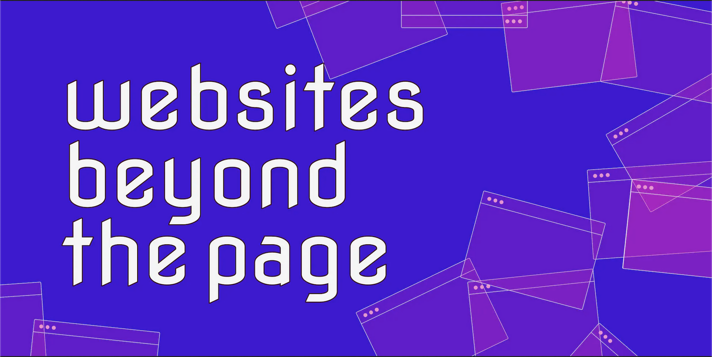

What can Websites do (that books can’t?)
- They move
- They can be updated
- They are interactive
- They can link to other websites
- They cost less to publish
- One link = Same form of the website
- Eco friendly
- Wider potential audience
- A website can change based on who is looking at it.
- A website can read itself to you
- Website knows what time it is
- Website knows how many people have accessed it
- Website can be very visual, designed?
- Can change fonts
- Can look different every time you visit
- Uses data
- It’s design and structure are public
- You can’t burn a website
- Websites can be hacked
- Websites can hear you and see you (if you let it)